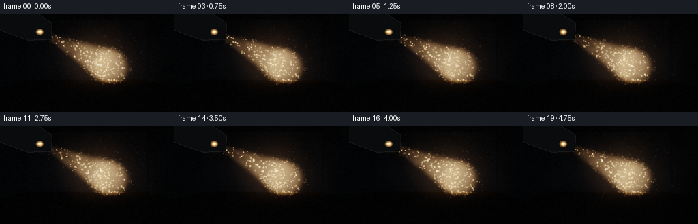
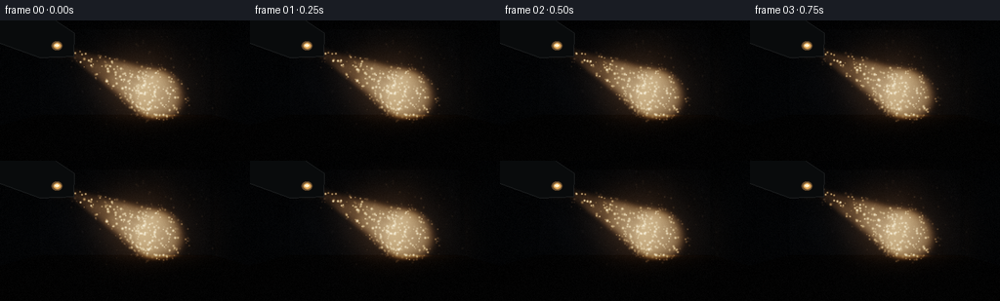
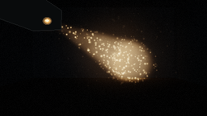

CODING AGENTS AS PIXEL WORLD MODELS
traex/DeepSeek-V4.1-Flash · phygen_055
点击播放 · 原生 RGB 像素
逐轮保存的候选
回放视频、检查图与代码变化。
每份候选均可单独播放。实际图片检查记录在下方工具轨迹中。
候选 01播放与检查图
点击播放 · 原生 RGB 像素

展开代码变化
--- 上一保存版本
+++ 本次保存版本
@@ -0,0 +1,382 @@
+from pathlib import Path
+
+import numpy as np
+from PIL import Image, ImageDraw, ImageFilter
+
+import artifact_io
+
+
+CASE_DIR = Path(__file__).resolve().parent
+WIDTH, HEIGHT = 256, 144
+FRAMES, FPS = 20, 4.0
+RW, RH = 384, 216
+
+CAMERA = np.array([0.0, 0.0, 0.0], dtype=np.float64)
+HFOV = np.deg2rad(52.0)
+FOCAL = RW / (2.0 * np.tan(HFOV * 0.5))
+
+ROOM_MIN = np.array([-3.15, -0.88, 0.0], dtype=np.float64)
+ROOM_MAX = np.array([3.15, 2.25, 9.45], dtype=np.float64)
+
+LENS = np.array([-0.43, 0.285, 1.62], dtype=np.float64)
+TARGET = np.array([1.30, -0.23, 9.45], dtype=np.float64)
+BEAM_VEC = TARGET - LENS
+BEAM_LEN = float(np.linalg.norm(BEAM_VEC))
+BEAM_DIR = BEAM_VEC / BEAM_LEN
+BEAM_TAN = np.tan(np.deg2rad(8.2))
+LENS_RADIUS = 0.026
+
+UP = np.array([0.0, 1.0, 0.0], dtype=np.float64)
+BEAM_RIGHT = np.cross(BEAM_DIR, UP)
+BEAM_RIGHT /= np.linalg.norm(BEAM_RIGHT)
+BEAM_UP = np.cross(BEAM_RIGHT, BEAM_DIR)
+BEAM_UP /= np.linalg.norm(BEAM_UP)
+
+
+def smoothstep(edge0, edge1, x):
+ t = np.clip((x - edge0) / (edge1 - edge0), 0.0, 1.0)
+ return t * t * (3.0 - 2.0 * t)
+
+
+def make_particles():
+ rng = np.random.default_rng(55021)
+ beam_count, ambient_count = 360, 250
+
+ axial = rng.uniform(0.08, BEAM_LEN - 0.08, beam_count)
+ angle = rng.uniform(0.0, 2.0 * np.pi, beam_count)
+ radius = np.sqrt(rng.uniform(0.0, 1.0, beam_count))
+ radius *= (LENS_RADIUS + axial * BEAM_TAN) * 1.02
+ beam_pos = (
+ LENS[None, :]
+ + BEAM_DIR[None, :] * axial[:, None]
+ + BEAM_RIGHT[None, :] * (np.cos(angle) * radius)[:, None]
+ + BEAM_UP[None, :] * (np.sin(angle) * radius)[:, None]
+ )
+
+ ambient_pos = rng.uniform(
+ [ROOM_MIN[0] + 0.15, ROOM_MIN[1] + 0.08, 0.65],
+ [ROOM_MAX[0] - 0.15, ROOM_MAX[1] - 0.12, ROOM_MAX[2] - 0.15],
+ (ambient_count, 3),
+ )
+ positions = np.vstack([beam_pos, ambient_pos])
+
+ velocity = np.zeros_like(positions)
+ velocity[:, 0] = rng.normal(0.0, 0.010, len(positions))
+ velocity[:, 1] = rng.uniform(-0.004, 0.014, len(positions))
+ velocity[:, 2] = rng.normal(0.0, 0.007, len(positions))
+ velocity[:beam_count] += BEAM_DIR[None, :] * rng.uniform(0.008, 0.025, beam_count)[:, None]
+
+ return {
+ "positions": positions,
+ "velocity": velocity,
+ "phase": rng.uniform(0.0, 2.0 * np.pi, len(positions)),
+ "frequency": rng.uniform(0.35, 1.35, len(positions)),
+ "wobble": rng.uniform(0.006, 0.035, (len(positions), 3)),
+ "size": rng.uniform(0.72, 1.65, len(positions)),
+ "strength": rng.uniform(0.45, 1.35, len(positions)),
+ "beam_particle": np.r_[np.ones(beam_count), np.zeros(ambient_count)],
+ }
+
+
+PARTICLES = make_particles()
+
+
+def camera_rays(width, height):
+ xs = (np.arange(width, dtype=np.float64) + 0.5 - width * 0.5) / FOCAL
+ ys = -(np.arange(height, dtype=np.float64) + 0.5 - height * 0.5) / FOCAL
+ xx, yy = np.meshgrid(xs, ys)
+ directions = np.stack([xx, yy, np.ones_like(xx)], axis=-1)
+ directions /= np.linalg.norm(directions, axis=-1, keepdims=True)
+ return directions.reshape(-1, 3)
+
+
+RAYS = camera_rays(RW, RH)
+
+
+def room_intersections(directions):
+ eps = 1e-8
+ inf = np.full(len(directions), 1e6)
+ back = np.where(directions[:, 2] > eps, (ROOM_MAX[2] - CAMERA[2]) / directions[:, 2], inf)
+ left = np.where(directions[:, 0] < -eps, (ROOM_MIN[0] - CAMERA[0]) / directions[:, 0], inf)
+ right = np.where(directions[:, 0] > eps, (ROOM_MAX[0] - CAMERA[0]) / directions[:, 0], inf)
+ floor = np.where(directions[:, 1] < -eps, (ROOM_MIN[1] - CAMERA[1]) / directions[:, 1], inf)
+ ceiling = np.where(directions[:, 1] > eps, (ROOM_MAX[1] - CAMERA[1]) / directions[:, 1], inf)
+
+ distances = np.stack([back, left, right, floor, ceiling], axis=1)
+ nearest = np.argmin(distances, axis=1)
+ t = distances[np.arange(len(directions)), nearest]
+ return t, nearest
+
+
+def beam_field(points, time_s):
+ relative = points - LENS[None, :]
+ axial = relative @ BEAM_DIR
+ radial_vec = relative - axial[:, None] * BEAM_DIR[None, :]
+ radial = np.linalg.norm(radial_vec, axis=1)
+ cone_radius = LENS_RADIUS + np.maximum(axial, 0.0) * BEAM_TAN
+ ratio = radial / np.maximum(cone_radius, 1e-5)
+
+ inside_axis = smoothstep(-0.03, 0.07, axial) * smoothstep(BEAM_LEN + 0.08, BEAM_LEN - 0.18, axial)
+ core = np.exp(-((ratio / 0.74) ** 6))
+ halo = np.exp(-((ratio / 1.58) ** 2))
+ field = inside_axis * (core + 0.085 * halo)
+
+ angle = np.arctan2(radial_vec @ BEAM_UP, radial_vec @ BEAM_RIGHT)
+ cloud = (
+ 0.72
+ + 0.15 * np.sin(2.55 * axial + 1.85 * angle + 0.72 * time_s)
+ + 0.10 * np.sin(6.7 * axial - 2.4 * angle - 0.45 * time_s + 1.1)
+ + 0.06 * np.sin(13.2 * axial + 5.1 * angle + 0.28 * time_s)
+ )
+ cloud = np.clip(cloud, 0.35, 1.15)
+ return field, cloud, axial, radial, ratio
+
+
+def background(directions, time_s):
+ t_room, surface = room_intersections(directions)
+ points = CAMERA[None, :] + directions * t_room[:, None]
+ color = np.zeros((len(directions), 3), dtype=np.float64)
+
+ base = np.array(
+ [
+ [0.019, 0.022, 0.026], # back wall
+ [0.014, 0.017, 0.020], # left wall
+ [0.014, 0.017, 0.020], # right wall
+ [0.016, 0.014, 0.012], # floor
+ [0.011, 0.013, 0.016], # ceiling
+ ]
+ )
+ color[:] = base[surface]
+
+ p = points
+ wall_grain = (
+ 0.86
+ + 0.07 * np.sin(1.7 * p[:, 1] + 0.9 * p[:, 2])
+ + 0.045 * np.sin(5.3 * p[:, 0] + 3.1 * p[:, 1] + 0.7)
+ + 0.025 * np.sin(14.7 * p[:, 2] - 6.1 * p[:, 0])
+ )
+ color *= wall_grain[:, None]
+
+ # A faint cool ambience keeps the architecture readable without lifting the blacks.
+ distance_to_center = np.sqrt((p[:, 0] / 3.2) ** 2 + ((p[:, 1] + 0.2) / 1.8) ** 2)
+ color += np.array([0.006, 0.008, 0.011])[None, :] * np.exp(-distance_to_center[:, None] ** 2)
+
+ # Direct projector spill where the cone meets a surface.
+ field, _, axial, _, _ = beam_field(p, time_s)
+ spill = field * np.exp(-np.maximum(axial, 0.0) * 0.025)
+ spill_color = np.array([0.60, 0.35, 0.15])
+ color += spill[:, None] * spill_color[None, :] * 0.48
+
+ # Subtle contact darkness at floor/wall joins.
+ wall_edge = np.zeros(len(points))
+ wall_edge[surface == 3] = smoothstep(-0.25, -0.88, p[surface == 3, 1])
+ wall_edge[surface == 0] = smoothstep(0.5, -0.88, p[surface == 0, 1]) * 0.45
+ color *= (1.0 - 0.30 * wall_edge)[:, None]
+
+ return color, t_room
+
+
+def volumetric_beam(directions, t_room, time_s):
+ count = len(directions)
+ accumulation = np.zeros(count, dtype=np.float64)
+ steps = 58
+ dt = 0.185
+ # A fixed sub-step jitter avoids visible bands while remaining temporally stable.
+ pixel_id = np.arange(count, dtype=np.uint32)
+ jitter = ((pixel_id * 2654435761) & 65535).astype(np.float64) / 65535.0
+
+ for step in range(steps):
+ distance = 0.22 + (step + jitter) * dt
+ valid = distance < t_room
+ if not np.any(valid):
+ break
+ points = CAMERA[None, :] + directions[valid] * distance[valid, None]
+ field, cloud, axial, _, ratio = beam_field(points, time_s)
+ # Brighter near the aperture, with a soft internal filament structure.
+ source_gain = 0.74 + 0.58 * np.exp(-np.maximum(axial, 0.0) * 0.31)
+ density = field * cloud * source_gain
+ accumulation[valid] += density * dt
+
+ accumulation *= 0.66
+ accumulation = 1.0 - np.exp(-accumulation)
+ core = accumulation ** 1.7
+ warm = np.array([1.0, 0.61, 0.31])
+ pale = np.array([1.0, 0.84, 0.62])
+ return accumulation[:, None] * warm[None, :] * 0.34 + core[:, None] * pale[None, :] * 0.24
+
+
+def add_sprite(image, x, y, radius, color):
+ h, w = image.shape[:2]
+ x0 = max(0, int(np.floor(x - radius * 2.5)))
+ x1 = min(w, int(np.ceil(x + radius * 2.5)) + 1)
+ y0 = max(0, int(np.floor(y - radius * 2.5)))
+ y1 = min(h, int(np.ceil(y + radius * 2.5)) + 1)
+ if x0 >= x1 or y0 >= y1:
+ return
+ yy, xx = np.mgrid[y0:y1, x0:x1]
+ sigma = max(radius * 0.62, 0.38)
+ weight = np.exp(-((xx - x) ** 2 + (yy - y) ** 2) / (2.0 * sigma * sigma))
+ weight /= max(weight.max(), 1e-8)
+ image[y0:y1, x0:x1] += weight[:, :, None] * np.asarray(color)[None, None, :]
+
+
+def dust_layer(image, time_s):
+ p = PARTICLES["positions"].copy()
+ p += PARTICLES["velocity"] * time_s
+ p += PARTICLES["wobble"] * np.sin(
+ PARTICLES["frequency"][:, None] * time_s * 2.0 + PARTICLES["phase"][:, None]
+ )
+ p[:, 0] = np.clip(p[:, 0], ROOM_MIN[0] + 0.03, ROOM_MAX[0] - 0.03)
+ p[:, 1] = np.clip(p[:, 1], ROOM_MIN[1] + 0.03, ROOM_MAX[1] - 0.03)
+ p[:, 2] = np.clip(p[:, 2], 0.45, ROOM_MAX[2] - 0.04)
+
+ field, _, _, _, ratio = beam_field(p, time_s)
+ visible = p[:, 2] > 0.5
+ sx = RW * 0.5 + FOCAL * p[:, 0] / p[:, 2]
+ sy = RH * 0.5 - FOCAL * p[:, 1] / p[:, 2]
+ visible &= (sx > -2) & (sx < RW + 2) & (sy > -2) & (sy < RH + 2)
+
+ twinkle = 0.72 + 0.28 * np.sin(
+ PARTICLES["frequency"] * time_s * 3.3 + PARTICLES["phase"] * 1.7
+ )
+ warm = np.array([1.0, 0.69, 0.38])
+ cool = np.array([0.34, 0.42, 0.52])
+
+ for index in np.flatnonzero(visible):
+ in_light = field[index]
+ color = cool * 0.020 + warm * in_light * 1.12
+ color *= PARTICLES["strength"][index] * twinkle[index]
+ radius = PARTICLES["size"][index] * (1.05 + 0.10 * np.clip(4.0 / p[index, 2], 0.4, 1.4))
+ add_sprite(image, sx[index], sy[index], radius, color)
+
+
+def aces_tonemap(x):
+ x = np.maximum(x, 0.0)
+ return np.clip((x * (2.51 * x + 0.03)) / (x * (2.43 * x + 0.59) + 0.14), 0.0, 1.0)
+
+
+def render_linear(time_s):
+ directions = RAYS
+ color, t_room = background(directions, time_s)
+ color += volumetric_beam(directions, t_room, time_s)
+
+ # Very faint projector flare in the room air.
+ to_lens = LENS - CAMERA
+ lens_distance = directions @ to_lens
+ impact = np.linalg.norm(directions * lens_distance[:, None] - to_lens[None, :], axis=1)
+ flare = np.exp(-(impact / 0.045) ** 2) * 0.34
+ color += flare[:, None] * np.array([1.0, 0.72, 0.43])[None, :]
+
+ color = color.reshape(RH, RW, 3)
+ dust_layer(color, time_s)
+ return color
+
+
+def convex_hull(points):
+ pts = sorted(map(tuple, points))
+
+ def cross(o, a, b):
+ return (a[0] - o[0]) * (b[1] - o[1]) - (a[1] - o[1]) * (b[0] - o[0])
+
+ lower = []
+ for point in pts:
+ while len(lower) >= 2 and cross(lower[-2], lower[-1], point) <= 0:
+ lower.pop()
+ lower.append(point)
+ upper = []
+ for point in reversed(pts):
+ while len(upper) >= 2 and cross(upper[-2], upper[-1], point) <= 0:
+ upper.pop()
+ upper.append(point)
+ return lower[:-1] + upper[:-1]
+
+
+def project_point(point):
+ return (
+ RW * 0.5 + FOCAL * point[0] / point[2],
+ RH * 0.5 - FOCAL * point[1] / point[2],
+ )
+
+
+def projector_overlay(image):
+ # Oriented low-profile projector body, mostly in silhouette against the wall.
+ center = LENS - BEAM_DIR * 0.205
+ body_right = BEAM_RIGHT * 0.115
+ body_up = BEAM_UP * 0.075
+ body_axis = BEAM_DIR * 0.205
+ corners = []
+ for sx in (-1, 1):
+ for sy in (-1, 1):
+ for sz in (-1, 1):
+ corners.append(center + sx * body_right + sy * body_up + sz * body_axis)
+ hull = convex_hull([project_point(p) for p in corners])
+
+ layer = Image.new("RGBA", (RW, RH), (0, 0, 0, 0))
+ draw = ImageDraw.Draw(layer)
+ draw.polygon(hull, fill=(9, 11, 12, 255), outline=(37, 40, 41, 255))
+
+ # A thin top-edge catch light gives the dark housing a readable form.
+ top = sorted(hull, key=lambda q: q[1])[:3]
+ if len(top) >= 2:
+ draw.line(top[:2], fill=(67, 64, 57, 150), width=1)
+
+ lens_x, lens_y = project_point(LENS)
+ draw.ellipse(
+ (lens_x - 7.8, lens_y - 6.7, lens_x + 7.8, lens_y + 6.7),
+ fill=(89, 49, 20, 55),
+ )
+ draw.ellipse(
+ (lens_x - 5.5, lens_y - 4.6, lens_x + 5.5, lens_y + 4.6),
+ fill=(255, 190, 96, 195),
+ )
+ draw.ellipse(
+ (lens_x - 2.6, lens_y - 2.2, lens_x + 2.6, lens_y + 2.2),
+ fill=(255, 246, 216, 255),
+ )
+ layer = layer.filter(ImageFilter.GaussianBlur(0.38))
+ return Image.alpha_composite(image.convert("RGBA"), layer).convert("RGB")
+
+
+def postprocess(linear, time_s):
+ exposure = 1.23
+ rgb = aces_tonemap(linear * exposure)
+
+ # Bloom from the brightest volumetric and dust highlights.
+ bright = np.maximum(linear - 0.38, 0.0)
+ bright_img = Image.fromarray(np.clip(bright * 255.0 / 2.0, 0, 255).astype(np.uint8))
+ bloom = np.asarray(bright_img.filter(ImageFilter.GaussianBlur(3.2)), dtype=np.float64) / 255.0
+ rgb = 1.0 - (1.0 - rgb) * (1.0 - bloom * 0.22)
+
+ yy, xx = np.mgrid[0:RH, 0:RW]
+ nx = (xx - RW * 0.5) / (RW * 0.5)
+ ny = (yy - RH * 0.5) / (RH * 0.5)
+ vignette = 1.0 - 0.20 * np.clip((nx * 0.74) ** 2 + (ny * 0.72) ** 2, 0.0, 1.3)
+ rgb *= vignette[:, :, None]
+
+ # Fine, deterministic sensor texture prevents the low-bit dark areas from banding.
+ rng = np.random.default_rng(9100 + int(round(time_s * FPS)))
+ grain = rng.normal(0.0, 0.0065, (RH, RW, 1))
+ rgb = np.clip(rgb + grain, 0.0, 1.0)
+ rgb = np.power(rgb, 1.0 / 1.06)
+
+ image = Image.fromarray((rgb * 255.0 + 0.5).astype(np.uint8), "RGB")
+ image = projector_overlay(image)
+ return image.resize((WIDTH, HEIGHT), Image.Resampling.LANCZOS)
+
+
+def main():
+ frames = []
+ for index in range(FRAMES):
+ time_s = index / FPS
+ linear = render_linear(time_s)
+ frame = postprocess(linear, time_s)
+ frames.append(np.asarray(frame, dtype=np.uint8))
+ print(f"rendered frame {index + 1:02d}/{FRAMES}")
+
+ frames = np.stack(frames, axis=0)
+ artifact_io.save(frames, CASE_DIR)
+ print(f"saved {frames.shape} RGB frames to {CASE_DIR}")
+
+
+if __name__ == "__main__":
+ main()
候选 02播放与检查图
点击播放 · 原生 RGB 像素


展开代码变化
--- 上一保存版本
+++ 本次保存版本
@@ -197,12 +197,12 @@
density = field * cloud * source_gain
accumulation[valid] += density * dt
- accumulation *= 0.66
+ accumulation *= 0.88
accumulation = 1.0 - np.exp(-accumulation)
core = accumulation ** 1.7
warm = np.array([1.0, 0.61, 0.31])
pale = np.array([1.0, 0.84, 0.62])
- return accumulation[:, None] * warm[None, :] * 0.34 + core[:, None] * pale[None, :] * 0.24
+ return accumulation[:, None] * warm[None, :] * 0.42 + core[:, None] * pale[None, :] * 0.29
def add_sprite(image, x, y, radius, color):
@@ -264,8 +264,8 @@
to_lens = LENS - CAMERA
lens_distance = directions @ to_lens
impact = np.linalg.norm(directions * lens_distance[:, None] - to_lens[None, :], axis=1)
- flare = np.exp(-(impact / 0.045) ** 2) * 0.34
- color += flare[:, None] * np.array([1.0, 0.72, 0.43])[None, :]
+ flare = np.exp(-(impact / 0.060) ** 2) * 0.58
+ color += flare[:, None] * np.array([1.0, 0.67, 0.35])[None, :]
color = color.reshape(RH, RW, 3)
dust_layer(color, time_s)
@@ -326,7 +326,11 @@
fill=(89, 49, 20, 55),
)
draw.ellipse(
- (lens_x - 5.5, lens_y - 4.6, lens_x + 5.5, lens_y + 4.6),
+ (lens_x - 6.4, lens_y - 5.4, lens_x + 6.4, lens_y + 5.4),
+ fill=(255, 168, 74, 92),
+ )
+ draw.ellipse(
+ (lens_x - 4.9, lens_y - 4.1, lens_x + 4.9, lens_y + 4.1),
fill=(255, 190, 96, 195),
)
draw.ellipse(
候选 03播放与检查图
可观测工具轨迹
实际执行的命令与返回图片。
命令 1exit 0
/bin/bash -c 'cat prompt.txt'
命令 2exit 0
/bin/bash -c 'cat GENERATION_RULES.md'
命令 3exit 0
/bin/bash -c 'cat task_spec.json'
命令 4exit 0
/bin/bash -c "find . -maxdepth 2 -type f -printf '%p\\n' | sort | head -200"
命令 5exit 0
/bin/bash -c "sed -n '1,240p' artifact_io.py"
命令 6exit 0
/bin/bash -c "sed -n '1,240p' player_template.html"
命令 7exit 0
/bin/bash -c "python - <<'PY'
import numpy, PIL
print('numpy', numpy.__version__)
print('PIL', PIL.__version__)
PY"命令 8exit 0
/bin/bash -c "python - <<'PY'
try:
import scipy; print('scipy', scipy.__version__)
except Exception as e: print('no scipy', e)
PY"命令 9exit 1
/bin/bash -c 'python generate.py'
命令 10exit 1
/bin/bash -c 'python generate.py'
命令 11exit 0
/bin/bash -c "nl -ba generate.py | sed -n '205,260p'"
命令 12exit 0
/bin/bash -c 'python generate.py'
命令 13exit 0
/bin/bash -c "python - <<'PY'
from PIL import Image
import numpy as np
for i in [0,9,19]:
a=np.array(Image.open(f'frames/{i:02d}.png'))
print(i,'mean',a.mean(axis=(0,1)),'max',a.max(),'p99',np.percentile(a,99),'nonzero',np.mean(np.any(a>3,axis=2)))
PY"命令 14exit 0
/bin/bash -c "python - <<'PY'
import numpy as np
import generate as g
c,t=g.background(g.RAYS,0)
v=g.volumetric_beam(g.RAYS,t,0)
print('background', c.min(), c.mean(), np.percentile(c,[50,90,99,99.9]), c.max())
print('volume', v.min(), v.mean(), np.percentile(v,[50,90,99,99.9]), v.max())
print('volume rgb max',v.max(axis=0))
lin=g.render_linear(0)
print('linear',lin.min(),lin.mean(),np.percentile(lin,[50,90,99,99.9]),lin.max())
PY"命令 15exit 0
/bin/bash -c "python - <<'PY'
import numpy as np
import generate as g
for tt in [0,4.75]:
c,t=g.background(g.RAYS,tt)
v=g.volumetric_beam(g.RAYS,t,tt)
lin=g.render_linear(tt)
for name,x in [('vol',v),('lin',lin)]:
yy,xx=np.unravel_index(np.argmax(x.max(axis=2) if x.ndim==3 else x),x.shape[:2])
print(tt,name,'peak at',xx,yy, 'val', x[yy,xx])
print('projector lens',g.project_point(g.LENS))
print('target',g.project_point(g.TARGET))
PY"命令 16exit 0
/bin/bash -c 'python generate.py'
视觉工具实际返回图片 1

视觉工具实际返回图片 2

视觉工具实际返回图片 3

视觉工具实际返回图片 4

保存候选 3 份；完成命令 16 次；可验证图片返回 4 张。原始 API 响应与完整日志保留在本地。